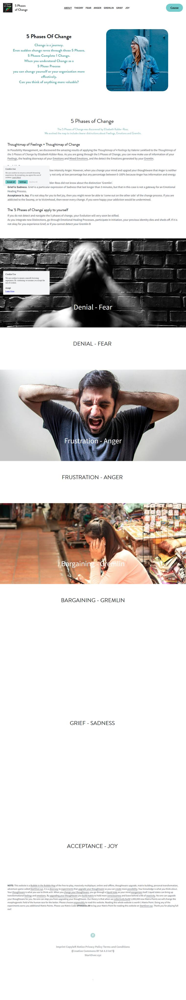

5 Phases Of Change on Strikingly
In Possibility Management, we discovered the amazing results of applying the Thoughtmap of 4 Feelings by Valerie Lankford to the Thoughtmap of the 5 Phases of Change by Elizabeth Kübler-Ross. As you are going through the 5 Phases of Change, you can now make use of information of your Feelings, the healing doorways of your Emotions and Mixed Emotions, and the detect the Emotions generated by your Gremlin.
Denial is Fear.
Frustation is Anger. Frustration is a low intensity Anger. However, when you change your mind and upgrad your thoughtware that Anger is neither good or bad, then it is ok to feel angry not only at low percentage but any percentage between 0-100% because Anger has information and energy for your process.
Bargaining is Gremlin. Elizabeth Kübler-Ross did not know about the distinction 'Gremlin'.
Grief is Sadness. Grief is a particular expression of Sadness that last longer than 3 minutes, but that in this case is not a gateway for an Emotional Healing Process.
Acceptance is Joy. If is not okay for you to feel joy, then you might never be able to 'come out on the other side' of the change process. If you are addicted to the Swamp, or to Victimhood, then never every change. If you were happy your addiction would be undermined.